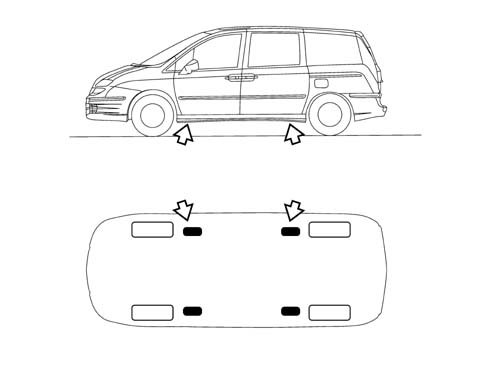

VEHICLE JACKING POINTS
- Path
- Technical Data > VEHICLE INTRODUCTION > VEHICLE TOWING AND JACK POINTS > VEHICLE JACKING POINTS
- Kind
- technical data / specifications
- Applies to
- all engines; all production periods
- Interactive page
- https://sloeber94.github.io/elrnDB-fUlss/en/#/179021627
Applies to: all engines; all production periods
To raise the vehicle using lift arms or a workshop lift, arrange the ends of the arms or the lift in the areas shown in the diagram only.

Before raising the vehicle using portable lifts, lock the wheels by placing chocks in front of (behind) the front (rear) wheels.
After having raised the vehicle, support it using safety stands.